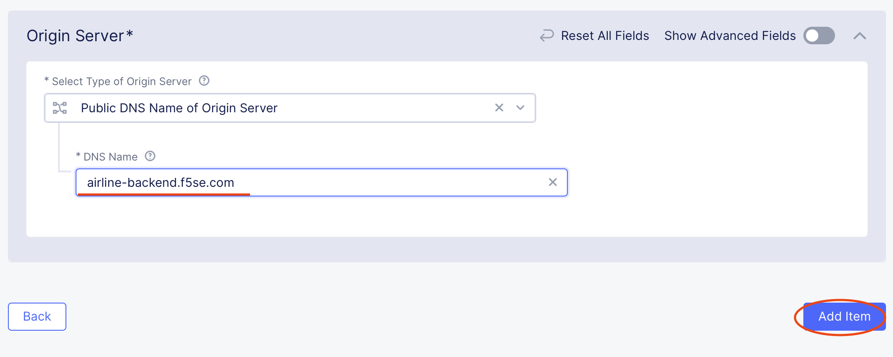
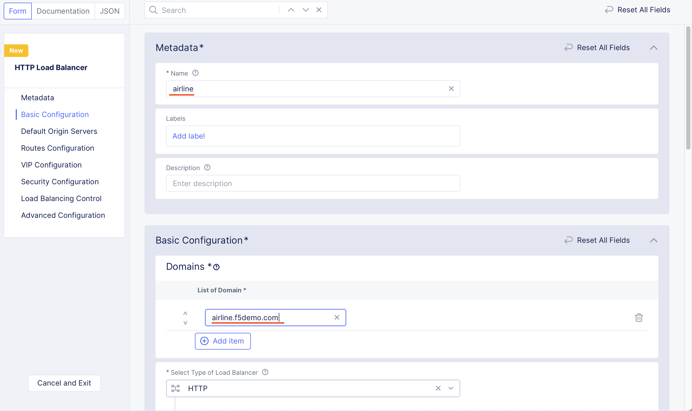

Lab 3 - Part 1 - Running a credential stuffing attack against F5 airlines¶
As a dependancy for configuring bot protection for the F5 airlines web presence we must first configure F5 Distributed cloud to be able to provide services for F5 airlines. This requires the following configuration:
You have logged into F5 XC console (lab1)
An origin pool - Origin pools specify where the origin resources to be protected are located. In this case we’ll be protecting https://airline-backend.f5se.com/
A load balancer - F5 distributed cloud bot protection capabilities are applied as part of the load balancer profile.
Lab 3 - Part 1 - Exercise 1: Get traffic flowing: Creating an origin pool¶
Log into F5 Distributed Cloud Console (as per lab 1)
Start in F5 Distributed Cloud Console and find the “Web App & API Protection” service from the services drop down.

Navigate to Manage -> Load Balancers -> Origin Pools

Click “Add Origin Pool”

Name the pool “airline-origin”
Under “Orgin Servers” click “Add Item”
Select “Public DNS Name of Origin Serer” - in this case we will be communicating to the origin based on it’s DNS name over the internet.
Enter “airline-backend.f5se.com” into the DNS name
Click “Add Item” to save the origin server defintiion.

Under TLS configuration - Select “TLS” - as communication between F5 distributed cloud and the origin will be secured using TLS.

Click “Save and Exit” to save the origin pool

Lab 3 - Part 1 - Exercise 2: Getting traffic flowing: Creating a Load Balancer¶
Start in F5 Distributed Cloud Console and find the “Web App & API Protection” service from the services drop down.
Navigate to Mange -> Load Balancers -> HTTP Load Balancers

Click “Add HTTP load balancer”

Name your load balancer “airline”
Input “airline.f5demo.com” as the domain

Note: If you have a DNS sub-domain deligated to F5 Distributed Cloud - you can use this domain. For the purposes of this lab we will access the load balancer using its CNAME.
Under “Default Origin Servers” select “Add Item”

Select the “airline-origin” origin pool object we recently created from the drop down list
Click “Add Item” to save the origin pool association

Click “Save and Exit” to save and create the load balancer object.
You will now be able to see the “airline” load balancer in the HTTP load balancers list
Lab 3 - Part 1 - Exercise 3: Getting traffic flowing: Check that you can reach the airline site via the F5 distributed cloud¶
Start in F5 Distributed Cloud Console and find the “Web App & API Protection” service from the services drop down.
Navigate to Mange -> Load Balancers -> HTTP Load Balancers
Identify the “airline” HTTP load balancer - Under the DNS info column you will see a CNAME reference which represents the DNS name for the F5 distributed cloud service - Click on the copy value button ()

Paste the copied CNAME into a web browser. The F5 airlines site should load. These application flows are being processed via the F5 distributed cloud.

This traffic has been handled by the F5 distributed cloud where application services such as WAF, API Protection and Bot Protection can now be applied.